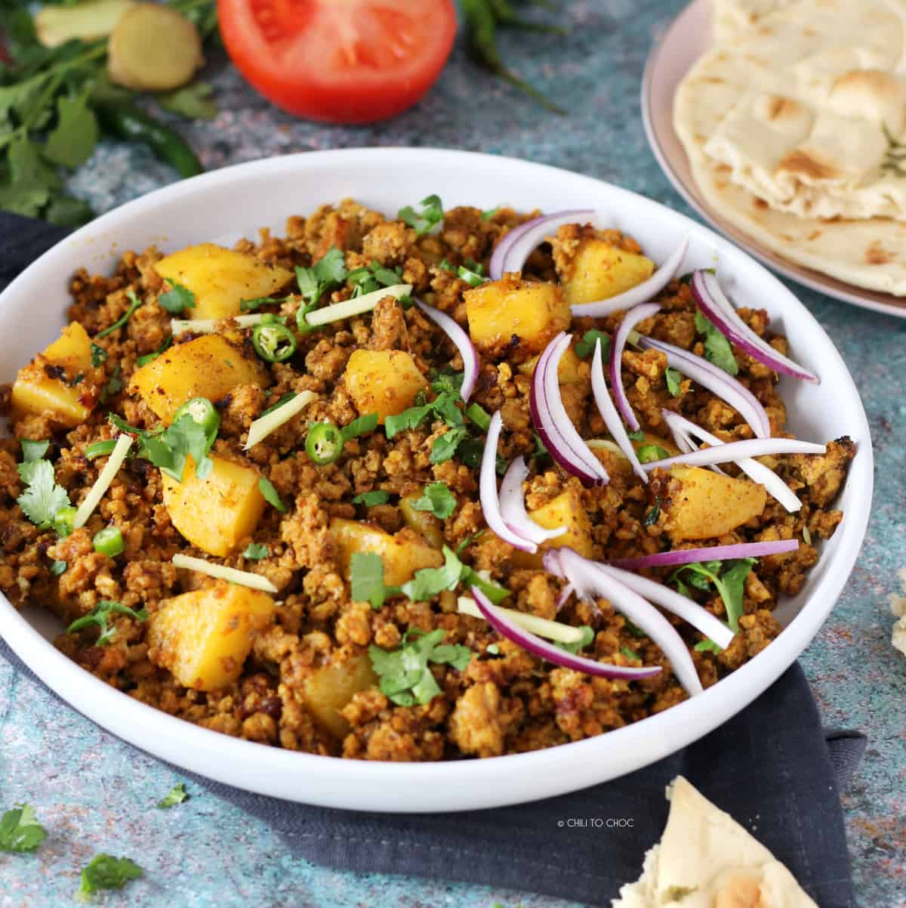

Odin Recipes

Description
It's a delicious dish that contains meat mince, potatoes. green peas.
it's cooked with indian spices that brings the traditional taste and it
gets ready in about 45 minutes.
Ingredients
- Meat mince, Potatoes, Peas
- Cooking oil, garlic ginger paste, onions, tomatoes
- chilli powder, garam masala, cummin seeds whole, cumming powder,
turmeric powder, salt, corrinder powder and crushed corrinder
- green chilles, lemon, fresh corriendar
Steps
- warm up oil, put 1 spoon whole cummin and 2 cut onions and
let them get pink
- add meat and cook till it's all water gets dry
- add garlic ginger paste, and all the spices and 1 cup water and cook for 10 minutes
- add potatoes and peas and 2 glass water and cook on medium heat till potatoes and peas are cooked
- add fresh corrinder and squeeze lemon
- TADA IT'S READY
Aloo-qeema